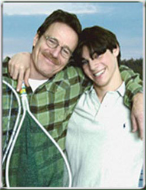

Walter White
Father, Husband & Teacher

- 


My dad is amazing. It's funny, but I didn't know that until I
found out he was going to die. That it was going to happen
soon. That it was real. Then I thought about a lot of stuff.
Things I hadn't thought about for a long time. I guess I kind
of took him for granted or something. I mean, our parents are
just always there. You expect them to always be bugging you
to clean up your room or study harder or have good manners or
try new things to grow up to be a more well-rounded person one
day. And make you get up early on the weekend to have
"family time" and all that other stuff that used to drive me
crazy. I don't feel that way now. Everything's different since
Dad got his diagnosis. Since I realized that one day in the
near future, he might not be around to drive me crazy.
Now I feel lucky when he asks me about my day (I used to totally hate that
question) or nags me about coming home on time at night and being respon-
sible. One day he won't be here to ask. Now I feel lucky when I hear
his car pulling into the driveway after school. I even like to hear him cough-
ing. It means he's still around. Still my dad.


My dad is the chemistry teacher at my high school and he's annoyingly smart.
I mean, super brainiac annoying. He knows the most random stuff. Like
how at room temperature, mercury is the only metal that is in liquid form.
And water expands as it drops in temperature, and by the time it's frozen it
takes up about 9% more space. Or that if you slowly pour a handful of salt
into a totally full glass of water, it won't overflow. In fact, the water level
will go down. He's always dropping the little facts about everything. He
doesn't realize what a geek he is for doing it, he's just really into chemistry.
I think he really doesn't understand that not everybody is. He likes to cook
because of chemistry - he mostly makes breakfast - because he says chemi-
cal reactions happen all the time in cooking and he's always explaining as he
goes. I don't take his class at school but I hear he's a pretty good teacher.
He gets a lot of practice at home, that's for sure.
The whole time I've been in high school (I'm a sophomore) I've always had to
hear what other kids thought of him. I was always Mr White's kid.
(Sometimes they call him Mr. Wallabee which is the name of the totally loser
shoes he always wears). Some kids dissed him just to get on my nerves.
Some kids just dissed him period because that's what you do with teachers.
The thing is though, he expects everyone to do their best just like he does,
and when you don't try your hardest he doesn't cut you any slack. That's
how he is at home and at school. I only just figured out what a good qual-
ity that is. That's what makes him brave in his cancer battle and what
made me brave, too when I was younger. Whether I wanted to be or not.
Anyway, I always just wanted to be some regular kid in school but because of
my dad being a teacher there I was different. I realize two things now.
First, I am already different because I have C.P. so that's a done deal.
And two, he's the right dad for me. I can't do a lot of physical stuff be-
cause of my disability and that's okay with my dad and it wouldn't be with a
lot of other dads I've met. They'd be disappointed because they're into
sports or whatever. I mean, my dad doesn't have a disability but you sure
wouldn't want to see him throw a football. So in that way, we get along. It
makes sense that he's my dad and I'm his son. My point is, I don't care
about what the kids at school say anymore. The bottom line is he's a good
teacher and no one can say he doesn't care about what he does. I know he
cares. After our family, chemistry and teaching kids is what he loves the
best. I really want to make sure he gets to keep doing what he loves to do
for a long time. For him, for his students, and for me and my family.
It's been a really tough time in our family since my dad got cancer. Not
that there's ever a good time for something as awful and as scary as that,
but it was sure a bad time for us. My mom was pregnant with what she calls
a surprise baby (who is now Holly and even though she's a newborn baby she's
actually cute) and my dad had an extra job after school to try to help pay
all the regular bills. And that was before he got his diagnosis. We don't
have a lot of money but we were doing okay until all the medical bills. And
my dad is pretty proud - okay, really proud - and doesn't want to take char-
ity. That's why I'm doing this. Not because I want to make him mad or
upset, but because I want him to have a fighting chance no matter what.
One thing I don't understand is why saving someone's life costs more than a
regular person can pay. And why some doctor's (usually the best ones) don't
take insurance. I think that's wrong. I mean, one of the big reasons why
my dad didn't want to get treatment at all in the first place was because he
didn't want to leave us behind with a huge debt. That's the thing about my
dad - he loves us more than anything. More than himself. But we want him
around and we want him to try everything he can to stay with us as long as
possible. This surgery is the one chance there is to save his life. And we
can't afford it. And every day that goes by is one less day I'll have with
him. And I don't want to tell my little sister about my dad. I want her to
know him for herself.
What a wonderful dad I have,
But he is in trouble.
It's Lung Cancer.
He needs an operation. Now!
To help, please send your contribution
to our operation fund
and keep my Dad in your prayers!